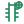
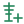
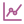
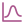

app-project-new.svgapp-project-open.svgapp-project-save.svgapp-project-settings.svgapp-import.svgapp-export.svgcore-project.svgcore-object.svgcore-reference.svggui-data-tree.svggui-well-group.svggui-global-logs.svg
gui-global-completions.svggui-global-observations.svggui-well-properties.svggui-wells.svggui-well.svg
gui-well-new.svggui-well-import.svggui-wellhead.svggui-well-trajectory.svggui-well-logs.svggui-well-completions.svggui-well-zones.svggui-seismic.svggui-surface-properties.svggui-faults.svggui-boundaries.svggui-natural-fractures.svggui-hydraulic-fractures.svggui-fluids.svggui-rock-physics.svggui-initial-conditions.svggui-microseismic.svggui-production.svggui-flow-diagnostics.svggui-field-management.svggui-grid.svggui-grid-geometry.svggui-grid-static-properties.svggui-grid-dynamic-properties.svggui-case.svggui-case-inputs.svggui-case-parameters.svggui-case-results.svggui-case-views.svgproviders-file.svgproviders-las.svgproviders-eclipse.svgproviders-load.svg
analysis-chart.svg
analysis-curve.svganalysis-run.svgrender-scene.svgrender-view.svgrender-visible.svgrender-hidden.svgpython-console.svgpython-script.svgassistant-chat.svgassistant-tools.svg